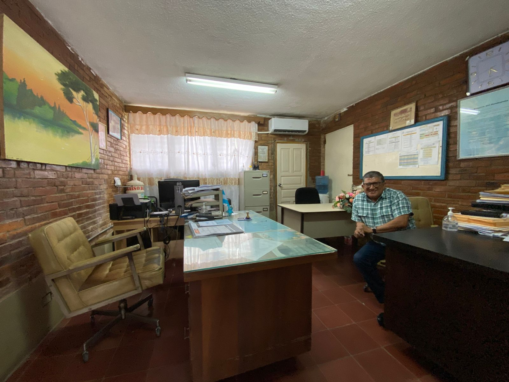

El Departamento de Subdirección del Instituto Departamental de Oriente cumple un rol esencial en el apoyo a la Dirección General, coordinando los procesos académicos y administrativos diarios para asegurar un desarrollo eficiente y armónico de la vida escolar.

Subdirector Académico: Lic. Carlos Martínez
El Lic. Martínez lidera la coordinación pedagógica en el IDO, asegurando la aplicación de las políticas curriculares, el seguimiento al rendimiento estudiantil y el acompañamiento a los docentes. Su visión humanista y organizacional ha sido clave para fortalecer los niveles de eficiencia académica.
Responsabilidades Principales
Supervisar el cumplimiento del plan de estudios en todos los niveles educativos.
Coordinar los horarios académicos y la asignación docente.
Monitorear el rendimiento académico de los estudiantes y proponer medidas de mejora.
Apoyar en la implementación de proyectos institucionales educativos.
Gestionar reuniones técnicas con jefes de departamento y coordinadores.
Brindar acompañamiento pedagógico al personal docente.
Coordinación con Docentes y Estudiantes
La Subdirección mantiene una comunicación constante con los docentes, orientadores y jefaturas de área para asegurar una experiencia educativa integral. También está abierta a recibir a padres y estudiantes para tratar casos académicos, disciplinarios o de apoyo psicopedagógico.
Horario de Atención
Día
Horario
Modalidad
Lunes a Viernes
7:30 AM – 3:30 PM
Presencial
Martes y Jueves
3:30 PM – 5:00 PM
Consultas académicas
Valores que Rigen la Subdirección
Responsabilidad: Ejercicio diligente del rol pedagógico y administrativo.
Empatía: Escucha activa y comprensión de las necesidades estudiantiles.
Liderazgo: Coordinación proactiva de procesos y equipos.
Colaboración: Trabajo conjunto con todos los sectores del instituto.